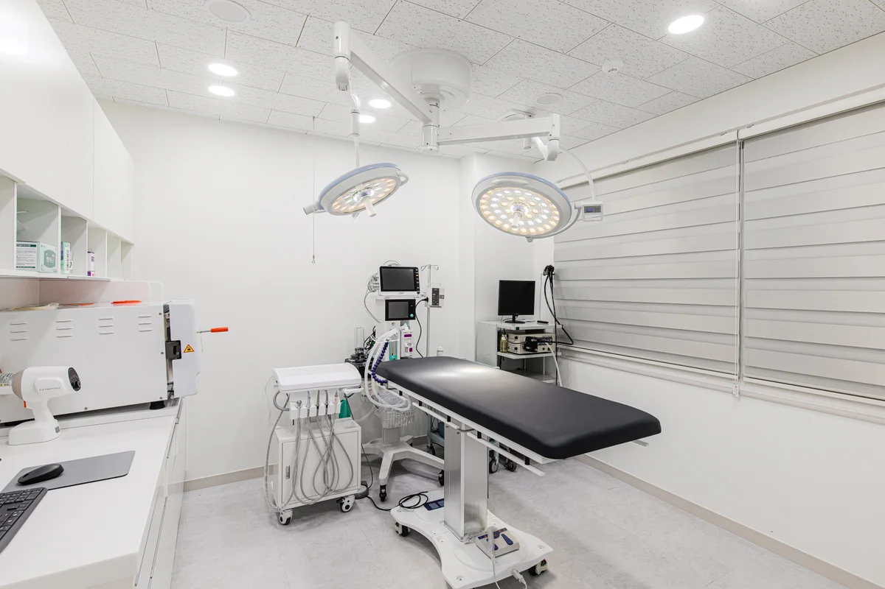

01 / 마취 전 평가
혈액검사와 흉부 방사선검사 등으로 상태를 평가하고 마취 계획을 세웁니다. 검사 범위는 아이에 따라 달라질 수 있습니다.
03 / 안전한 스케일링
스케일링의 시작과 끝에서 아이의 상태를 살핍니다. 안전을 위한 준비와 관찰 과정을 소중히 생각합니다.

혈액검사와 흉부 방사선검사 등으로 상태를 평가하고 마취 계획을 세웁니다. 검사 범위는 아이에 따라 달라질 수 있습니다.
상태에 맞는 정맥 수액 처치와 호흡마취를 진행하며 심박수, 산소포화도, 이산화탄소와 호흡수를 관찰합니다.
치석을 제거한 뒤 치아 표면을 연마하는 폴리싱을 진행합니다.
산소 공급과 보온, 호흡과 의식의 회복 상태를 확인하고 치아 상태 및 이후 관리 방법을 설명합니다.
모든 마취에는 위험이 있습니다. 마취 전 평가와 모니터링, 회복 관리를 통해 위험을 줄이기 위해 노력하며, 아이의 상태에 맞춰 계획을 안내합니다.
아이의 상태와 시술 일정에 맞는 준비사항을 병원에서 안내받아 주세요. 복용 중인 약이 있다면 미리 알려주세요.